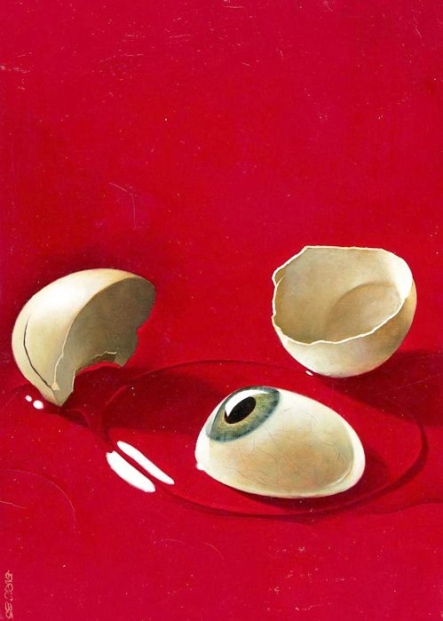

As designers, entrepreneurs and architects of digital culture we feel
the urge to refocus how we deal with our digital futures. Designing
Friction is a proposal to change the way we think when producing or
interacting with digital technology. Friction is resistance. It
derives from physical interaction between humans, and humans and
things. Its reach is holistic. All senses, elements and emotions play
a role: sight, sound, smell, taste touch, air, earth, temperature,
agitation, passion, joy, sadness. With movement comes friction.
20th Feb 2025
(The more we move and act, the more friction we encounter. The more
friction there is, the more we engage and care.) Friction drives our
engagement.
Friction, in this context, is not synonymous with either anger or
conflict, nor is it malfunctioning technology. Friction is an essential
ingredient that makes up our humanness and sparks human connection.
FRICTION IS A LIVELY INSTRINSIC EXPERIENCE!
Luna Maurer
Digital technology has long pursued the goal of eliminating friction,
striving for seamlessness. We now navigate a sea of frictionless
experiences.Digital technology goes hand-in-hand with the loss of
physical resistance.
[Roel Wouters]
Luna Maurer
Digital technology turns our interactions with things into
interactions with devices. A thing is split into its object, or form,
and its function. A device is the same object for each function.
[Roel Wouters]
Luna Maurer
It's your purse, your musical instrument and your letterbox, each of
which now demands the same bodily action.
[Roel Wouters]
Heading 1
Instead of using our whole hand to interact, we now often use our
fingertips to swipe screens or interact with air. Each new app or
innovation replaces a previously friction-laden human interaction
process. Transactions with machines are perceived to be smoother than
interactions with fellow humans.
20th Feb 2025

Heading 1
Everything can be effortlessly and immediately accessed from behind
our screens. We stay home due to home-delivery, dating apps, online
classes and endless on-demand entertainment. We are facing 'death by
convenience'. In such a reality, movement is trimmed down to a
minimum. In this reality, data is king. In creating convenience, all
our actions are recorded and translated into data, rendering them
readable and predictable. The better the data, the better the
predictability.
20th Feb 2025
Unpredictability, human messiness and unforeseen actions are all friction,
and counter this goal. Predictable futures can be controlled.
Luna Maurer
Keeping friction out maintains a fragile equilibrium. Enter AI —
technology becomes omnipresent, and evolves from being a tool, to
being a companion with humanlike appeal. We are on the verge of
committing our emotions to AI, plunging into an emotional dependency.
Luna Maurer
AI indulges us, consumes us. Its appeal gives us the comforts and
conveniences we learn to seek. To get satisfaction from interaction
with a model, you need to perform your predictable self. It becomes
almost impossible to step out, to live frictionfully. Our autonomy is
at stake.
[Roel Wouters]
Luna Maurer
Complete removal of friction means standing still. A completely
predictable future is no future, but a continuous present. In a world
where even our deepest desires can be foreseen, where we have lost our
autonomy, we long for what remains beyond the domain of data,
algorithms and databases and AI.
[Roel Wouters]
Heading 1
A world headed for a frictionless reality begs the question: how can
we create a desirable future with digital technology? How can we
access, develop and relate to it?
20th Feb 2025
We like to see designing friction as a fundamental design principle when
working with digital culture. Instead of following design ethics that
strive to eliminate friction, we suggest to not only allow, but
EMBRACE FRICTION!
To facilitate it: design products with digital technology in a way that
makes space for our humanness. Here friction is a core ingredient. Digital
technology should create environments and situations in which we can truly
connect with each other, as well as with the unknown, the uncontrolled,
with all senses, all elements, all emotions. It should create situations
that are not predicted, measured and calculated beforehand; situations
that result from and amount to the present moment.
Embrace
uncomfortable
situations.
In
uncomfortable
environments
we
can
discover
the
richness
and
b r e a d th
of friction.
uncomfortable
situations
help
you to
feel
structures
you are
not
adjusted
to
you
can
learn
and
DISCOVER!
With friction we get immersed, we get creative, we get alive. Discomfort
allows us to experience boundaries both physically and mentally. These are
necessary and productive.
Designing friction is exploring boundaries.
Friction makes things slower and that is okay. The fastest response might
not be the best one to design for. Instant gratification is what digital
technology currently optimizes for.
This results in the loss of desire, waiting and boredom. Avoiding boredom
makes us pick up a device as soon as we have nothing to do. Being bored
lets you start new fascinations. Boredom gets us into productive flow.
When friction acts to slow things down it allows us to step into the now.
Designing friction is fuelling longing and desire; it allows boredom and
allows for a slower pace.
Luna Maurer
When interacting with screens we lack resistance. Swiping screens
makes our world more superficial. Human life gains depth when having
thing-relations. Thing-relations tend to bring us together physically
and create connections.
[Roel Wouters]
Luna Maurer
Designing friction requires thinking about how to increase our
resistance. How can we engage our hands and whole bodies? How can
these bodily engagements bring us together?
[Roel Wouters]
Acknowledge the fulfilment in the non-positive. Today's digital technology
creates a society that is in 'pursuit of happiness', in awe of positivity.
Smoothness doesn't injure. It doesn't produce resistance. It enforces the
Like. These mechanisms feed our desire for attention and being seen.
Designing friction cherishes the non-positive, the 'digital unseen', the
disagreement, the doubt, the vulnerable, the complicated. This is what
makes us human.
Perform your unpredictable self. Design environments and situations that
trigger and facilitate unpredictable behaviour. De-automise. Step out of
your pattern. Do something strange.
(Friction perceived as an obstacle might in fact be a possibility for
connection.)